Bedroom
A calm room for rest: wooden headboard, lime-plastered wall and a large arched window.
Materialswoven rattan, travertine, walnut, matte lime plaster

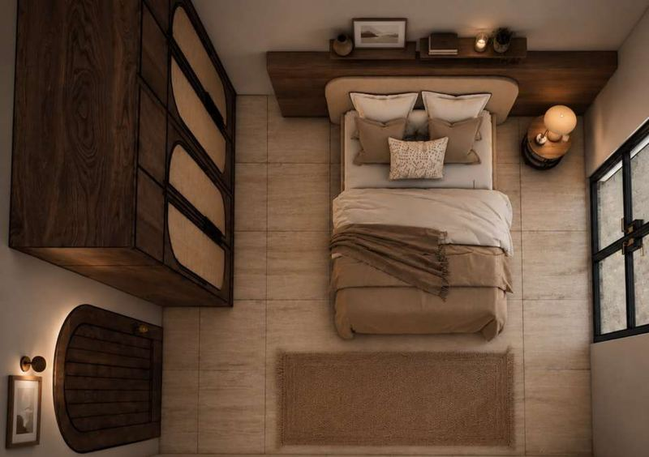


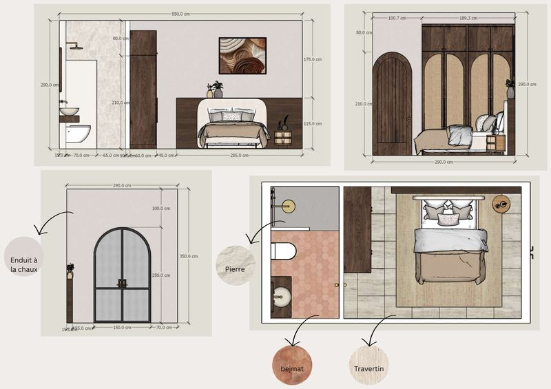
Academic project · Rabat
Interior architecture for a rehabilitation centre in Rabat: calm, light and a garden at the centre.

The question that started the project.
How can a rehabilitation centre treat behavioural addictions linked to instant gratification, with an interior that supports well-being, digital detox and reconnection with oneself?
Social media, smartphone dependency, short-form content and compulsive shopping affect well-being, relationships and quality of life. The centre answers with architecture, nature and interior design working together in a modern Mediterranean spirit.
The centre is organised around a central garden.

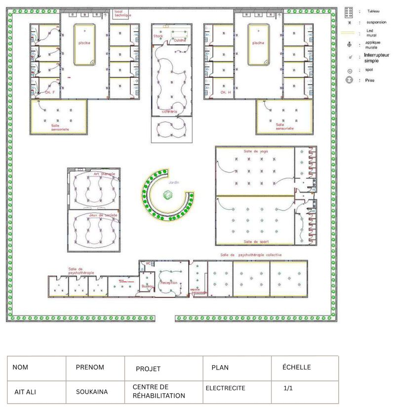
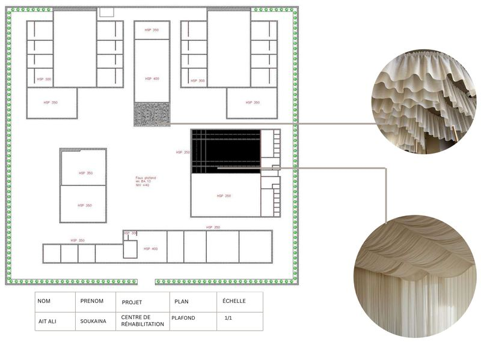
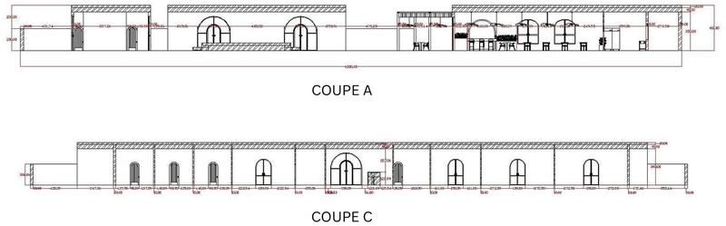
Each room comes with its moodboard, plan and elevations.
A calm room for rest: wooden headboard, lime-plastered wall and a large arched window.
Materialswoven rattan, travertine, walnut, matte lime plaster


Arches, natural-fibre pendants and a sand-pink counter for a quiet place to eat.
Materialsstone, tile
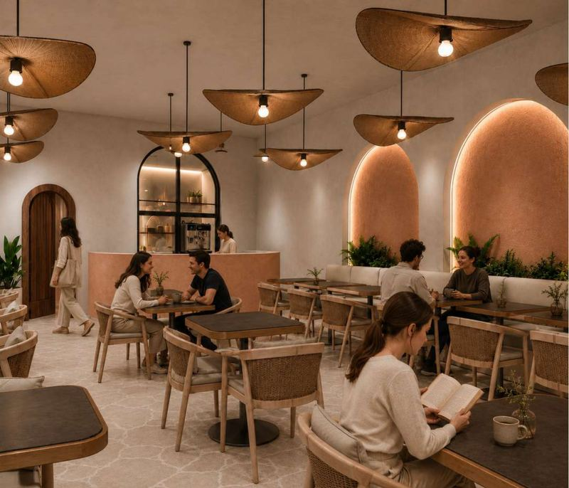
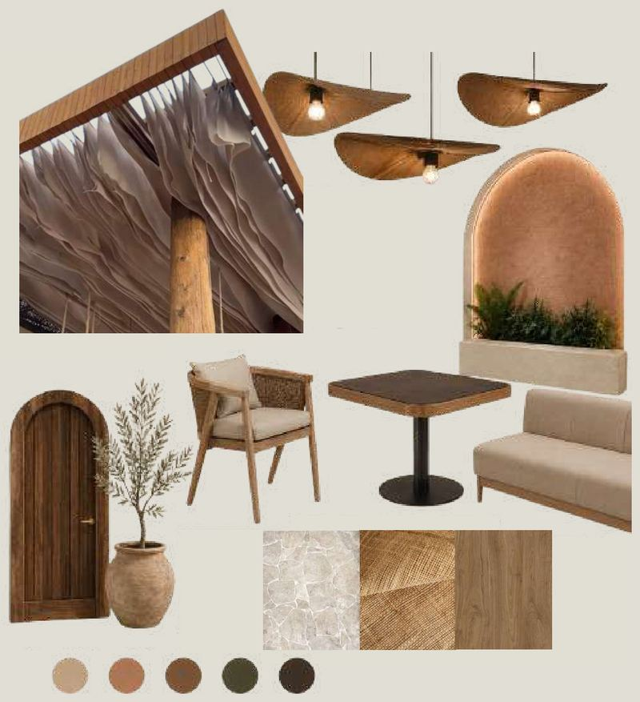
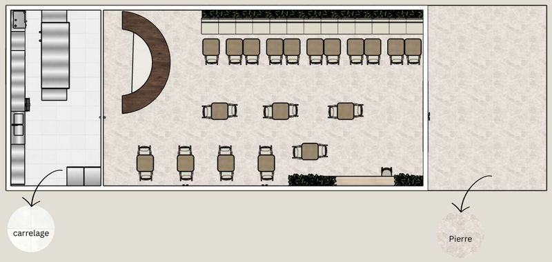
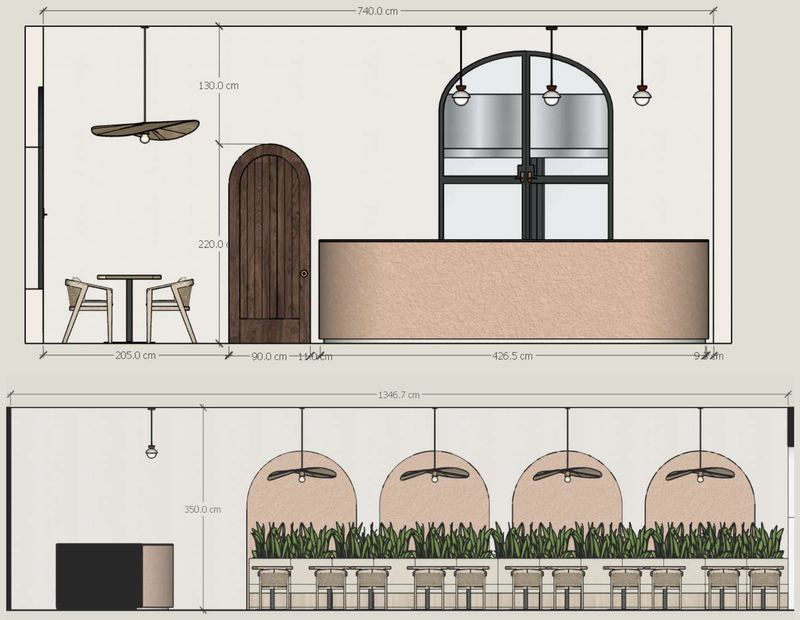
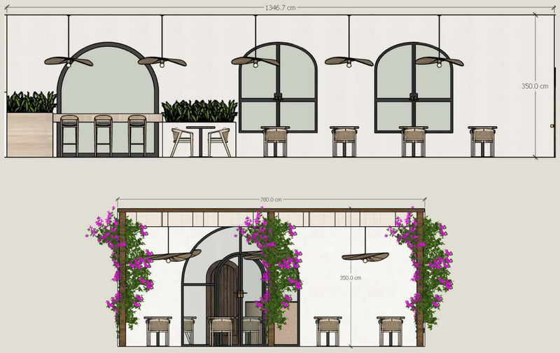
A solid wood table, vaulted niches and warm tones for studio work.
Materialspolished concrete floor, terrazzo sink, Arizona dust walls

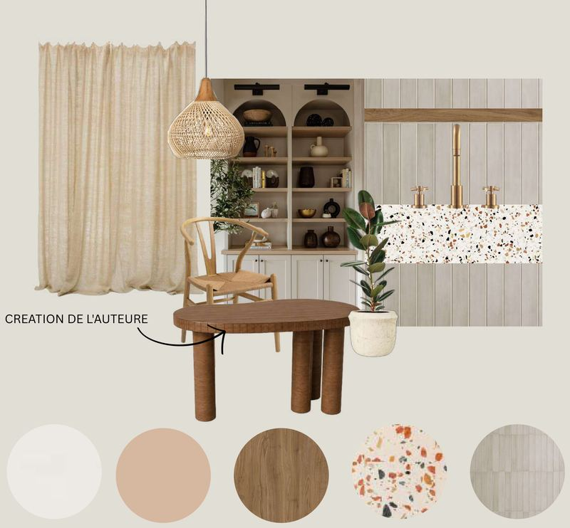
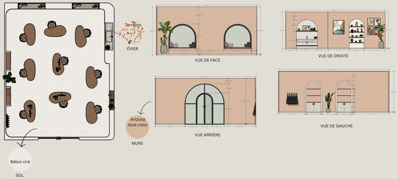
A linen ceiling, a light wood floor and a row of columns that sets the rhythm.
Materialsmatte lime plaster, natural stone, linen, woven rattan, wood flooring
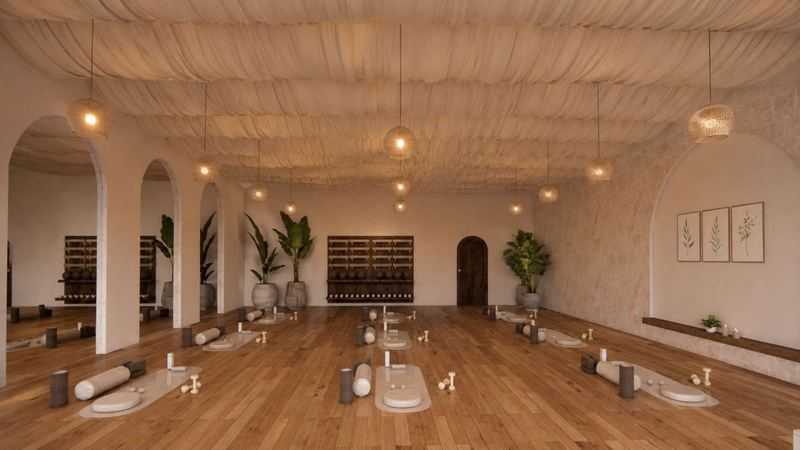
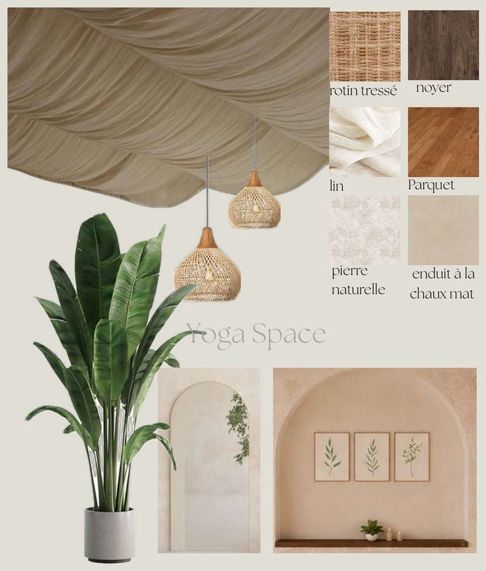
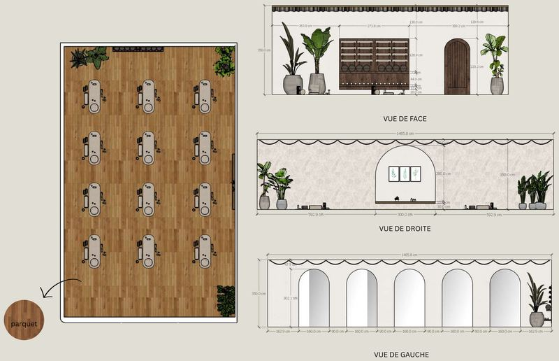
The courtyard and the pergola.